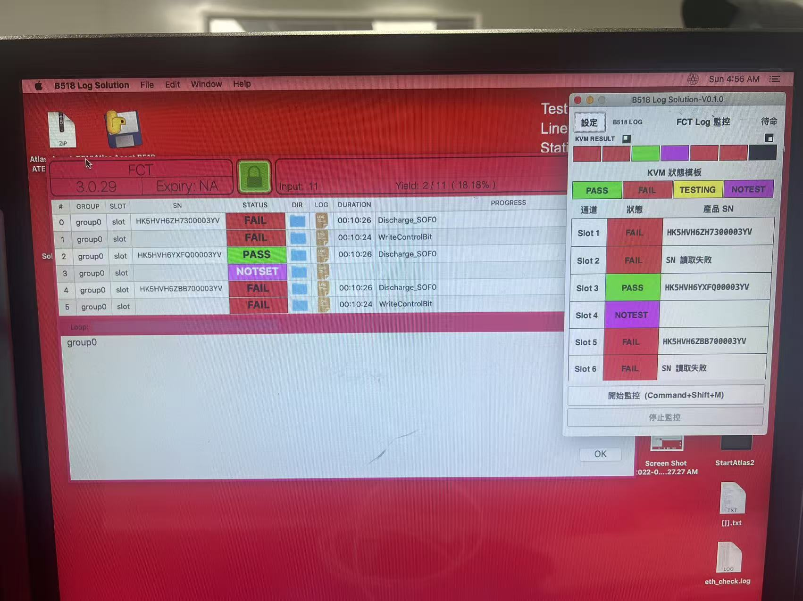
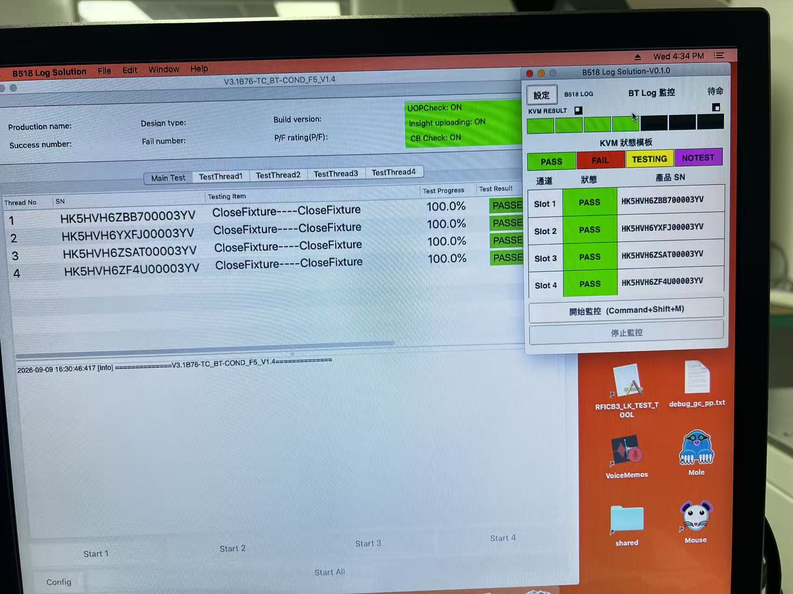

For production test engineers (TEs) operating the app and developers learning its log-monitoring workflow. Open index-en.html in this folder to read offline.
The dashboard lets TEs read results and provides a fixed display for KVM image recognition. Configure the paths before starting monitoring. Monitoring does not start the test in Atlas or the BT HMI. PASS, FAIL, and NOTEST bring Log Solution to the foreground for KVM reading; TIMEOUT and STOPPED do not.
1234567
Figure 1. BT dashboard. The numbers match the descriptions below. DFU and FCT use the same layout with different numbers of available slots. Screenshots retain the actual Chinese app labels; English instructions include the corresponding labels.
No.
Area / control
Function
1
Settings（設定）
Opens Monitoring Settings（監控設定）and Events & Session（事件與 Session）. Select the station, set paths and timeouts, view events, and open session records.
2
Version and station
Shows the B518 Log Solution version and the selected DFU, FCT, or BT station.
3
Monitoring status
Shows Standby（待命）, Starting（啟動中）, Monitoring（監控中）, or Stopped after timeout（逾時停止）. Standby means monitoring is inactive; results from the previous round may remain visible.
4
KVM RESULT strip
Seven fixed blocks represent Slot 1–7 from left to right. Black-and-white markers at both ends identify position and orientation. DFU uses 1–7, FCT uses 1–6, and BT uses 1–4. Unavailable slots remain black.
5
KVM reference colors
Fixed PASS, FAIL, TESTING, and NOTEST samples let the KVM system prepare its recognition templates. These blocks are not buttons.
6
Result table
Shows each available slot, its state, and the product serial number (SN). BT Slot 1–4 correspond to tester Thread 1–4.
7
Start / stop monitoring
Start Monitoring（開始監控）records the round's start time and the logs already in the folder so old results are not mistaken for new ones. The shortcut is Command + Shift + M. It does not start the tester. Stop Monitoring（停止監控）ends the round: unfinished slots become STOPPED and completed results are retained.
TE operating guide
Before you begin
Open B518 Log Solution and make sure this Mac can read the folder where the tester writes logs.
Keep the dashboard in the top-right corner visible, without Atlas or the BT HMI covering it, so the KVM can read the results.
Click Start Monitoring（開始監控）before each new round. The app records the start time and existing logs; unchanged CSV files that were already present are not treated as results for the new round.
Quick start
Open settings. Click Settings（設定）on the dashboard.
Select the station and paths. Choose DFU, FCT, or BT, then use Select（選擇）to choose the root folders described below.
Save. Save（儲存）stores the station, paths, and timeouts together. Cancel（取消）discards changes.
Start monitoring. Click Start Monitoring（開始監控）or press Command + Shift + M. Starting（啟動中）means the app is recording which logs already exist so it can distinguish old results. It then shows Monitoring（監控中）.
Start the tester next. Wait for Monitoring（監控中）before starting the test. Check the slot and SN during testing.
Read the results. When PASS, FAIL, NOTEST, or TIMEOUT appears, follow the result guide. Start monitoring again for the next round.
Configure log paths
Project-specific paths: This manual is based on the B482 project. Select the correct paths for your own project.
Folders must exist and be readable. Blank, missing, or inaccessible paths prevent monitoring from starting. The structures below are examples; select the root folders used by your tester.
DFU field label: The app currently labels the field Final Result Root（最終結果根路徑 (unitest)）. For this deployment, select /Users/gdlocal/Library/Logs/Atlas/unit-archive. This manual describes the configuration; it does not change the app.
BT CaseInfo: This field may be left blank, but selecting /vault/B482_RFTEST/TestData is recommended so activity and SN can appear before the final CSV arrives. With only the final CSV, the waiting-to-start timeout may expire before results are produced.
Default timeouts: DFU and FCT: 30 seconds waiting to start / 480 seconds per test. BT: 30 / 240 seconds. Each station accepts positive whole numbers in seconds.
Figure 2. Selecting a station determines its path fields and number of slots.Figure 3. BT configuration example. Select TestData for both paths; CaseInfo is optional but recommended.
Set and save BT paths using Figure 3
Open settings. Click Settings（設定）and select the Monitoring Settings（監控設定）tab.
Select BT. Choose BT in the Station（工站）dropdown. The TestData, CaseInfo, and two timeout fields appear.
Set TestData. Click Select（選擇）beside BT TestData Root（BT TestData 根路徑）and choose /vault/B482_RFTEST/TestData. Confirm that the full path appears in the field.
Set CaseInfo. Click Select（選擇）beside BT CaseInfo Root（BT CaseInfo 根路徑）and choose the same /vault/B482_RFTEST/TestData folder. This optional field is recommended to show SN and TESTING earlier.
Check the timeouts. BT defaults are 30 seconds for Waiting-to-Start Timeout（等待開始測試逾時）and 240 seconds for Test Time Limit（測試時間上限）. If adjusted for your line, both must remain positive whole numbers.
Save the settings. Click Save（儲存）at the bottom right. Return to the dashboard before clicking Start Monitoring（開始監控）. Cancel（取消）or closing the settings window discards unsaved changes.
Interpret results
These eight states and colors have been checked against the current v0.1.0 source code. COMPLETING is light blue. The installed app package has not been verified against this source.
State
Meaning
What to do
WAITING
No test activity has been observed for this slot in this round.
Confirm monitoring started first, then check that the tester writes to the selected folder.
TESTING
Live log or BT CaseInfo activity was detected. The SN may already be visible.
Wait for the final result and check the slot and product SN.
COMPLETING
Waiting for the final test result; this does not mean the test passed. The state may appear briefly, or the display may go directly from TESTING to PASS/FAIL.
Wait for the archive or TestData result. If the time limit is exceeded, follow TIMEOUT guidance.
PASS
The final log indicates a pass.
Release the product according to your production procedure; let KVM read the strip or screen as needed.
FAIL
The final log indicates a failure, or DFU/FCT activity ended without a trusted SN being read.
Follow the production exception procedure and retain the original logs.
NOTEST
DFU/FCT: after activity has occurred and all available slots' active folders have been absent for at least 3 seconds, unused slots change from WAITING to NOTEST. BT: a final FAILED CSV with an empty SN produces NOTEST. This does not mean the entire round is complete.
Check whether the slot was intentionally unused. Report unexpected cases.
TIMEOUT
Waiting-to-start timeout: if no slot activity or final result arrives before the deadline, all available slots show TIMEOUT and monitoring stops. Individual test timeout: after a slot's first activity exceeds its test limit, only that slot is marked; other unfinished slots keep monitoring.
TIMEOUT does not mean a product FAIL. Check the tester, paths, and logs. Allow other slots to continue after an individual timeout; start a new round after this round finishes or you stop it manually.
STOPPED
An operator stopped monitoring. Unfinished slots become STOPPED; existing PASS/FAIL/NOTEST and TIMEOUT results remain.
This does not mean a product FAIL. Start a new monitoring round to resume testing.
KVM strip and channels
The top KVM RESULT strip always represents Slot 1–7 from left to right. DFU uses 1–7, FCT 1–6, and BT 1–4; unavailable slots stay black. The black-and-white end markers identify orientation for image recognition. The fixed PASS, FAIL, TESTING, and NOTEST samples are KVM references, not buttons.
Compare tester results
These photos show the tester HMI beside B518 Log Solution. Compare the channel, product SN, result, and KVM strip. The photos show visible results only; they do not establish the cause of a FAIL.
FCT: tester row numbers and Log Solution slots

Figure 4. FCT production results. Tester row numbers 0–5 on the left correspond to Log Solution Slot 1–6.
Tester row
Log Solution
Visible result
Product SN display
0
Slot 1
FAIL
HK5HVH6ZH7300003YV
1
Slot 2
FAIL
SN read failed（SN 讀取失敗）
2
Slot 3
PASS
HK5HVH6YXFQ00003YV
3
Slot 4
NOTEST
Blank
4
Slot 5
FAIL
HK5HVH6ZBB700003YV
5
Slot 6
FAIL
SN read failed（SN 讀取失敗）
The tester uses NOTSET for row 3 in this photo, while Log Solution shows NOTEST. In this comparison, both indicate no test result for that channel.
BT: tester threads, CSV names, and slots

Figure 5. BT production results. TestThread 1–4 show PASSED and Log Solution Slot 1–4 show PASS.
Tester
TestData CSV
Log Solution
Visible result
TestThread 1
Thread0
Slot 1
PASSED / PASS
TestThread 2
Thread1
Slot 2
PASSED / PASS
TestThread 3
Thread2
Slot 3
PASSED / PASS
TestThread 4
Thread3
Slot 4
PASSED / PASS
Troubleshooting
Monitoring will not start / path error
In Settings（設定）, check that all required root folders are selected, still exist, and are readable by your account. DFU/FCT require both active and final-result paths. BT requires TestData; CaseInfo may be blank.
Stuck at WAITING or waiting-to-start timeout
Start monitoring before starting the test, and confirm the tester writes to the selected folder. Unchanged files that existed before monitoring are ignored to avoid reusing old results. If no slot activity or final result arrives before the waiting-to-start deadline, all available slots become TIMEOUT and monitoring stops. Resolve the cause, then start monitoring again.
SN read failed（SN 讀取失敗）/ FAIL
DFU/FCT read a trusted SN from records.csv under active. If active disappears before a trusted SN is read, the slot becomes FAIL. Give the developers that slot's active records.csv and final-result records.csv.
An individual slot shows TIMEOUT
The test timer starts at the first TESTING/COMPLETING activity and includes time spent waiting for the final result. Only the timed-out slot is marked; other unfinished slots continue, and completed results remain. Check whether the final CSV arrived late, was written to another folder, or the tester stopped progressing.
BT requests manual review（人工覆核）
BT locks onto the first timestamp batch in the round. A different batch or another final result for the same thread prompts you to accept the new file. Choose Yes（是）only after confirming it belongs to the intended round and tester. If unsure, choose No（否）and report the session and original logs.
Why does BT show TESTING before PASS/FAIL?
With CaseInfo configured, activity from thread1–4 CaseInfo files maps to Slot 1–4. This can display activity and the barcode before the final CSV arrives. Final results still come from PASSED/FAILED CSV files under TestData.
Production trial & feedback
Suggested trial checklist
Report through WeChat
Open Settings（設定）→ Events & Session（事件與 Session）→ Open Session Records（開啟 Session 紀錄）to find the round's folder. A session contains session.json (settings, times, source paths), events.log (events), and results.csv (slot results). Original logs are not copied or backed up; attach them separately when reporting an issue.
Figure 6. Open Session Records（開啟 Session 紀錄）opens the current session folder or the folder containing all sessions.
Developer guide
How data flows
Settings & dashboard b518_log_solution.py
Start
Background polling Every 0.5 seconds
Read
DFU / FCT / BT logs log_monitoring.py
Events
UI & session records JSON, CSV, LOG
The desktop UI creates a monitor and queues events returned by its background thread. The UI periodically processes events to update slots and the event view. PASS/FAIL/NOTEST result events bring the dashboard to the foreground. The monitoring core does not control the tester and has no Arduino, USB, TCP, KVM, or screen-capture dependencies.
Aspect
DFU / FCT
BT
Monitor class
AtlasActiveArchiveMonitor
BtLogMonitor
Live source
active/group0-slotN/.../records.csv
Optional threadNCaseInfo_YYYY-MM-DD.txt
Final source
records.csv located by SN and timestamp under /Users/gdlocal/Library/Logs/Atlas/unit-archive
For B482, CSV files in the date's PASSED or FAILED folders under /vault/B482_RFTEST/TestData
SN
Reads trusted fields such as MLB_SN, PrimaryIdentity, or SerialNumber. The first trusted value is locked.
Reads the filename or CSV SerialNumber. CaseInfo SNRead records in the same TestData root can display the barcode earlier.
Result
Any final records.csv status starting with FAIL means FAIL; all statuses must start with PASS to produce PASS.
PASSED/FAILED values in the folder, filename, and CSV must agree. FAILED with an empty SN means NOTEST.
Avoiding old results
At startup, the app records existing CSV file sizes and modification times to identify new or changed files and exclude unchanged old results. This does not capture the screen or back up logs. DFU/FCT archives and BT final CSV files also undergo timestamp checks. BT CaseInfo is filtered by timestamps inside its records, rather than the CSV file-comparison method.
Source code map
b518_log_solution.py
UI, station settings, preferences, shortcut, event queue, and opening session records.
log_monitoring.py
Recording existing file sizes and modification times, CSV parsing, station monitors, timeouts, and SessionStore.
test_log_monitoring.py
Automated tests for log formats, SN handling, batches, CaseInfo, timeouts, and state decisions.
test_log_solution_ui.py
Automated tests for slot counts, colors, saved settings, path validation, and UI behavior.
Manual maintenance
This manual is based on B518 Log Solution v0.1.0 source code and the current production paths. When stations, log paths or formats, states, timeouts, session contents, or comparison photos change, update both language editions and docs/manual/MAINTENANCE.md in the source repository (maintenance records are not included in the shareable package). Check images, navigation, and print layout offline in a browser.